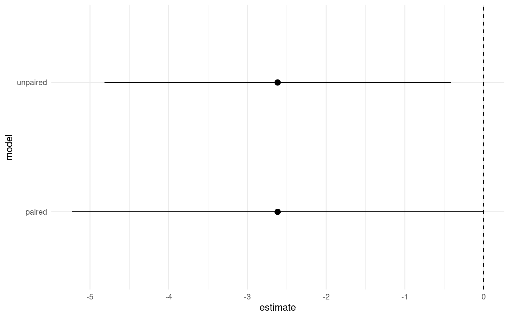

7 Paired tests
7.0.1 Packages
The structure of our linear model so far has produced the output for a standard two-sample Student’s t-test. However, when we first calculated our estimates by hand - we started by making an average of the paired differences in height. To generate the equivalent of a paired t-test, we simply have to add the factor for pairs to our linear model formula:
Call:
lm(formula = height ~ type + factor(pair), data = darwin)
Residuals:
Min 1Q Median 3Q Max
-5.4958 -0.9021 0.0000 0.9021 5.4958
Coefficients:
Estimate Std. Error t value Pr(>|t|)
(Intercept) 21.7458 2.4364 8.925 3.75e-07 ***
typeSelf -2.6167 1.2182 -2.148 0.0497 *
factor(pair)2 -4.2500 3.3362 -1.274 0.2234
factor(pair)3 0.0625 3.3362 0.019 0.9853
factor(pair)4 0.5625 3.3362 0.169 0.8685
factor(pair)5 -1.6875 3.3362 -0.506 0.6209
factor(pair)6 -0.3750 3.3362 -0.112 0.9121
factor(pair)7 -0.0625 3.3362 -0.019 0.9853
factor(pair)8 -2.6250 3.3362 -0.787 0.4445
factor(pair)9 -3.0625 3.3362 -0.918 0.3742
factor(pair)10 -0.6250 3.3362 -0.187 0.8541
factor(pair)11 -0.6875 3.3362 -0.206 0.8397
factor(pair)12 -0.9375 3.3362 -0.281 0.7828
factor(pair)13 -3.0000 3.3362 -0.899 0.3837
factor(pair)14 -1.1875 3.3362 -0.356 0.7272
factor(pair)15 -5.4375 3.3362 -1.630 0.1254
---
Signif. codes: 0 '***' 0.001 '**' 0.01 '*' 0.05 '.' 0.1 ' ' 1
Residual standard error: 3.336 on 14 degrees of freedom
Multiple R-squared: 0.469, Adjusted R-squared: -0.09997
F-statistic: 0.8243 on 15 and 14 DF, p-value: 0.6434| term | estimate | std.error | statistic | p.value |
|---|---|---|---|---|
| (Intercept) | 21.745833 | 2.436389 | 8.9254352 | 0.0000004 |
| typeSelf | -2.616667 | 1.218195 | -2.1479875 | 0.0497029 |
| pair2 | -4.250000 | 3.336163 | -1.2739185 | 0.2234352 |
| pair3 | 0.062500 | 3.336163 | 0.0187341 | 0.9853176 |
| pair4 | 0.562500 | 3.336163 | 0.1686069 | 0.8685176 |
| pair5 | -1.687500 | 3.336163 | -0.5058206 | 0.6208532 |
| pair6 | -0.375000 | 3.336163 | -0.1124046 | 0.9120984 |
| pair7 | -0.062500 | 3.336163 | -0.0187341 | 0.9853176 |
| pair8 | -2.625000 | 3.336163 | -0.7868320 | 0.4444963 |
| pair9 | -3.062500 | 3.336163 | -0.9179707 | 0.3741786 |
| pair10 | -0.625000 | 3.336163 | -0.1873410 | 0.8540813 |
| pair11 | -0.687500 | 3.336163 | -0.2060750 | 0.8396990 |
| pair12 | -0.937500 | 3.336163 | -0.2810114 | 0.7828120 |
| pair13 | -3.000000 | 3.336163 | -0.8992366 | 0.3837329 |
| pair14 | -1.187500 | 3.336163 | -0.3559478 | 0.7271862 |
| pair15 | -5.437500 | 3.336163 | -1.6298663 | 0.1254148 |
Note that I have made pair a factor - pair 2 is not greater than pair 1 - so it does not make sense to treat these as number values.
The table of coefficients suddenly looks a lot more complicated! This is because now the intercept is the height of the crossed plant from pair 1:
The second row now compares the average heights difference of Crossed and Selfed plants when they are in the same pair
rows three to 16 compare the average difference of each pair (Crossed and Selfed combined) against pair 1
Again the linear model computes every possible combination of t-statistic and P-value, however the only one we care about is the difference in Cross and Self-pollinated plant heights. If we ignore the pair comparisons the second row gives us a paired t-test. ‘What is the difference in height between Cross and Self-pollinated plants when we hold pairs constant.’
Q. By including pairs we are making sure we deal with
7.1 Activity 1: Compare paired model designs
We previously compared the difference in plant heights by subtracting the difference between each pair of plants. Check our reasoning on the model design above by making another linear model based on the difference between pairs and check whether this is significantly different from 0, lm(difference ~ 1)
darwin_wide <- darwin |>
# pivot/reshape the data from long to wide format
pivot_wider(names_from = type, values_from = height) |>
# Calculate the difference between 'Cross' and 'Self' heights for each pair
mutate(difference = Cross - Self)
wide_model <- lm(difference ~ 1, data = darwin_wide)
summary(wide_model)
Call:
lm(formula = difference ~ 1, data = darwin_wide)
Residuals:
Min 1Q Median 3Q Max
-10.9917 -1.2417 0.3833 3.0083 6.7583
Coefficients:
Estimate Std. Error t value Pr(>|t|)
(Intercept) 2.617 1.218 2.148 0.0497 *
---
Signif. codes: 0 '***' 0.001 '**' 0.01 '*' 0.05 '.' 0.1 ' ' 1
Residual standard error: 4.718 on 14 degrees of freedomFor completeness let’s generate the confidence intervals for the paired t-test and compare them to our unpaired t-test.
lm(height ~ type + factor(pair), data = darwin) |>
broom::tidy(conf.int=T) |>
slice(1:2) # just show first two rows| term | estimate | std.error | statistic | p.value | conf.low | conf.high |
|---|---|---|---|---|---|---|
| (Intercept) | 21.745833 | 2.436389 | 8.925435 | 0.0000004 | 16.520298 | 26.9713683 |
| typeSelf | -2.616667 | 1.218195 | -2.147988 | 0.0497029 | -5.229434 | -0.0038992 |
We can see that estimate of the mean difference is identical but the 95% confidence intervals are now slightly different. So in this particular version we have actually increased our level of uncertainty by including the pair parameter.
m1 <- lm(height ~ type, data = darwin) |>
broom::tidy( conf.int=T) |>
slice(2:2) |>
mutate(model="unpaired")
m2 <- lm(height ~ type + factor(pair), data = darwin) |>
broom::tidy(conf.int=T) |>
slice(2:2) |>
mutate(model="paired")
rbind(m1,m2) |>
ggplot(aes(model, estimate))+
geom_pointrange(aes(ymin=conf.high, ymax=conf.low))+
geom_hline(aes(yintercept=0), linetype="dashed")+
theme_minimal()+
coord_flip()
Choosing the right model
In this case we had a good a priori reason to include pair in our model, so I would argue that it should stay - alternative approaches are model simplification and stepwise removal. We will discuss these later.
7.2 Effect sizes
We have discussed the importance of using confidence intervals to talk about effect sizes. When our 95% confidence intervals do not overlap the intercept, this indicates we have difference in our means which is significant at \(\alpha\) = 0.05. More interestingly than this it allows us to talk about the ‘amount of difference’ between our treatments, the lower margin of our confidence intervals is the smallest/minimum effect size. On the response scale of our variables this is very useful, we can report for example that there is at least a 0.4 inch height difference between self and crossed fertilised plants at \(\alpha\) = 0.05.
7.3 Type 1 and Type 2 errors
The repeatability of results is a key part of the scientific method. Unfortunately there is often an emphasis in the literature on ‘novel findings’, which means that unusual/interesting results that happen to reach statistical significance may be more likely to be published. The reality is that we know if we set an \(\alpha\) = 0.05, that we run the risk of rejecting the null hypothesis incorrectly in 1 in 20 of our experiments (A Type 1 error).
Type 2 errors. Statistical tests provide you with the probability of making a Type 1 error (rejecting the null hypothesis incorrectly) in the form of P. But what about Type 2 errors? Keeping the null hypothesis, when we should be rejecting it? Or not finding an effect.
The probability of making a Type 2 error is known as \(1-\beta\), where \(\beta\) refers to your statistical ‘power’. Working out statistical power is is very straightforward for simple tests, and then becomes rapidly more diffcult as the complexity of your analysis increases… but it is an important concept to understand.
On the other side of the coin is experimental power - this is strength of your experiment to detect a statistical effect when there is one. Power is expressed as 1-\(\beta\). You want beta error typically to be less than 20%. So, you want a power of about 80%. That is you have an 80% chance of finding an effect if it’s there.
All experiments/statistical analyses will become statistically significant if you make the sample size large enough. In this respect it shows how misleading a significant result can be. It is not that interesting if a result is statistically significant, but the effect size is tiny.
7.4 Activity 2: Write-up
We analysed the difference in heights between selfed and cross-pollinated maize plants using a paired analysis of 15 pairs of plants. On average we found plants that have been cross pollinated (20.2 inches [18.3, 22], (mean [95% CI])) were taller than the self-pollinated plants (t(14) = -2.148, p = 0.0497), with a mean difference in height of 2.62 [0.004, 5.23] inches .7.5 Summary
This chapter finally allowed us to calculate P-values and test statistical significance for our experiments using linear models. We also compared the linear model structures for producing a paired vs. unpaired t-test.
However we also learned to appreciate the potential issues around making Type 1 and Type 2 errors, and how an appreciation of confidence intervals and standardised effect sizes can be used to assess these.
A single experiment is never definitive, and a reliance on reporting P-values is uninformative and can be misleading. Instead reporting estimates and confidence intervals allows us to report our levels of uncertainty, and provides results which are more informative for comparative studies.